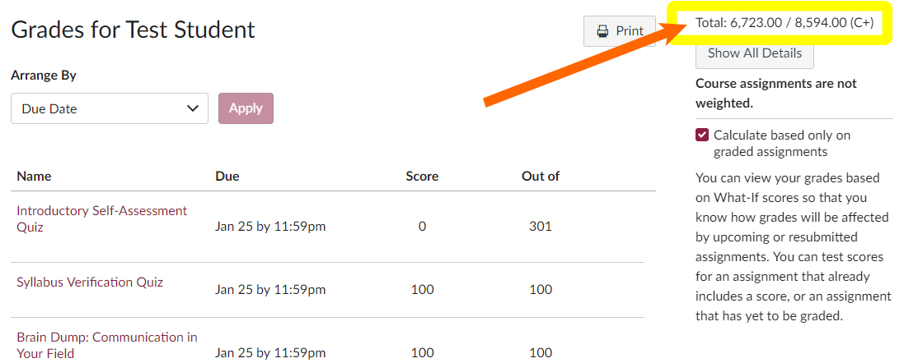

We are a little over two weeks from the last day of the course, so I want to remind you how to check on your grade in the course. The information I am sharing comes from our Technical Writing Course Manual. You can check the manual for more details as needed.
How to Determine Your Current Grade
Because of the way Canvas has been programmed, your current grade in the course is not accurate. In the screenshot below, for instance, Test Student‘s grade shows as a C+. That calculation is incorrect. Follow these instructions to determine your actual grade.
Go to Grades in Canvas, and find your total number of points in the upper right (outlined in yellow in the screenshot below). In this case, Test Student only has 6723 points.

Compare Your Current Number of Points to the Grade Scale
Determine your current grade by checking your current number of points to the information in the Points and Grade Scale in the Course Manual. Since Test Student has 6723 points, she falls in the D+ range for her course grade:

Continue Your Work in the Course
Your points total in the course cannot be any lower than it is right now. For instance, Test Student has a D+ locked in. Her grade will not be any lower.
As you complete the remaining work in the course, your points total will rise. You can decide what work to complete based on your goal for the course.
My Progress on Grading Your Work
We are in the middle of the longest assignment in the course, which I have broken out into section-by-section assignments to help ensure everyone includes all the required parts of the report.
Unfortunately, that means that I have nearly 300 submissions in the queue to grade. I am working through them as quickly as I can, but it will take some time to respond to all of them. And of course, more submissions are coming in every day.
As a guideline, allow me a week to add relevant points to your Grades in Canvas. If your work does not meet the requirements, you will have the chance to revise and resubmit.